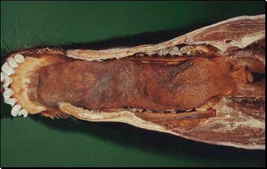

El alimento no está sujeto en la cavidad bucal de un cuadrúpedo por una corriente de agua, luego hay necesidad de una lengua muscular para la digestión, el transporte y la ingesta del alimento. La lengua también se usa de otros muchos modos. Aparte de variaciones en la forma de lengua, las varias regiones de la lengua tienen unas elevaciones de la mucosa llamadaspapilas que tienen función mecánica y función gustatoria.
